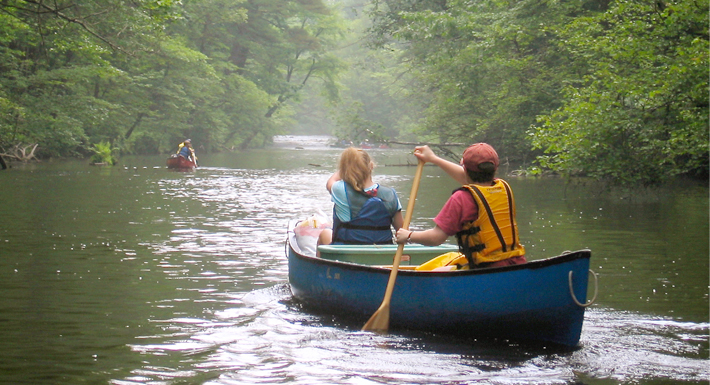
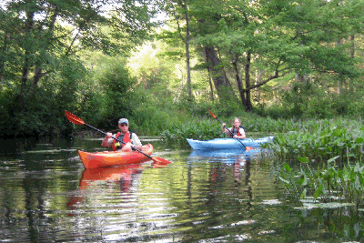
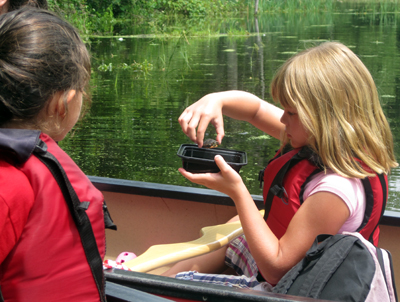
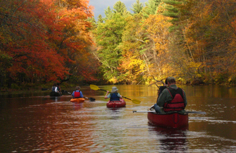
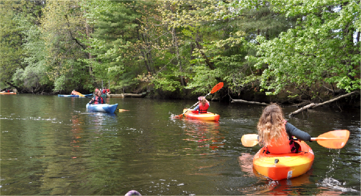

Paddling Tours
Our tours are kept small so we maximize our enjoyment and minimize our impact on the environment. Prices include the use of our boats, paddles, and personal flotation devices. (You may use your own equipment if you prefer.) Our guides are naturalists as well as American Canoe Association certified instructors who are there to share their knowledge of the river and help you with your paddling, if needed.
2020 Monthly Nature Tours

Full Moon Canoeing
CHOOSE ONE OF THE FOLLOWING DATES:
MAY 8, 7 - 10PM
JUNE 5, 7:30 - 10:30PM
JULY 5, 7:30 - 10:30PM
AUG 2, 7:30 - 10:30PM
SEPT 4, 6:30 - 9:30PM
Set out by canoe at dusk and as darkness approaches, watch the moon rise, being on the lookout for owls, beaver, bats, and other night life. After some delicious refreshments, we'll return following the moon's ribbon of light.
Trip Difficulty: Easy, flat-water, 5 miles roundtrip.
Cost: $45pp-canoes only. Refreshments included.
REGISTRATION REQUIRED

Nissitissit River Moving Water
MAY 3, 10AM- 2PM
Spring is the time to paddle the lovely Nissitissit River as its current carries you through beautiful forests and marshes. Have fun as you maneuver your boat to navigate the meanders and take in the beauty of this very special pristine river.
Trip difficulty: Intermediate, moving water, 6 miles downstream.
Cost: $50pp-canoe, $70pp-kayak.
REGISTRATION REQUIRED

Paddling with Beavers
JUNE 7, 7 - 10PM
Evening is the best time to spot beavers! As we paddle through their natural habitat, we will get an up-close look at a beaver lodge and may even be surprised by the loud noise of a beaver slapping its tail on the water to scare us away.
Trip Difficulty: Easy, flat-water, 4 miles roundtrip
Cost: $40pp-canoe, $60pp-kayak (Bring a picnic to enjoy when we take a riverside dinner break.)
REGISTRATION REQUIRED

Family Paddling with Turtles
JULY 11, 10AM - 1PM
Enjoy a special guided trip up the river and into a pond area filled with painted turtles and a couple of elusive snappers. We'll spend some time exploring and learning about these creatures and then stop for lunch before heading back.
Trip Difficulty: Easy, flat water, 3 miles roundtrip.
Cost: $80 per canoe- canoes only. (Bring a picnic to enjoy when we take a riverside dinner break.)
REGISTRATION REQUIRED

Oxbow National Wildlife Refuge Paddle
Aug 9, 10AM - 2PM
This national wildlife refuge was set aside to conserve and protect native wildlife habitats and species. A downstream paddle will give us the chance to explore the river and learn about this refuge, taking a lunch break along the way.
Trip Difficulty: Easy, flat water, 5 miles downstream.
Cost: $50pp-canoe, $70pp-kayak (Bring a picnic to enjoy when we take a riverside dinner break.)
REGISTRATION REQUIRED

River Paddling Adventure Tour
September 19, 10AM - 2PM
Enjoy the adventure of paddling a narrow, meandering section of the Squannacook River ending just below a small set of rapids. We'll stop to have some lunch and explore before heading back.
Trip Difficulty: Easy/moderate, flat water with some maneuvering required, 4 miles roundtrip.
Cost: $50pp-canoe, $70pp-kayak (Bring a picnic to enjoy when we take a riverside dinner break.)
REGISTRATION REQUIRED

Fall Foliage Paddle
CHOOSE ONE OF THE FOLLOWING DATES:
OCT 4, 12 - 3PM
OCT 10, 11AM - 2PM
Reflections of autumn foliage enhance the special beauty of this river. We will paddle along its narrow, meandering channel into areas of lily ponds and woodlands and stop for a scenic picnic along the way.
Trip Difficulty: Easy, flat-water, 3 miles roundtrip.
Cost: $40pp-canoe, $60pp-kayak. (Bring a picnic to enjoy when we take a riverside dinner break.)
REGISTRATION REQUIRED
Birthday Parties

Guided Parties
Options for any age! Guided parties include 2 hours of paddling and activities with a break for cupcakes. Choose from our theme party options and one of our fun-loving guides will lead your group on a memorable birthday adventure!
Cost: $22/person-canoe (3 people per boat), $52/person-solo kayaks
Minimum of 8 people, maximum 24 people (including adults)
Locally baked birthday cupcakes are included!
PICK FROM ONE OF OUR PADDLING PARTY THEMES!
- River Scavenger Hunt
- Nature Arts and Crafts
- Paddling Games
- Relaxing Scenic Paddle
Self Guided Parties
If you prefer to go out on the water without a guide, your party can rent boats and enjoy a beautiful day out on the river! Check out some of our group rental options group rental options to get some ideas! (10% discount on rentals with 6 boats or more)
Custom Guided Tours
Families, friends, companies, clubs, groups, youth groups! If you have at least 5 boats, we'll arrange a special guided tour for you on the Nashua or Squannacook Rivers. Choose from one of the nature tours listed above or we'll customize something for your group. Call us for details!
We have some interesting group rental options if you prefer to head out on your own.
398 West Main Street, Groton, MA | (978) 448-8699
Mailing Address: PO Box 228, West Groton, MA 01472
All rights reserved, Nashoba Paddler, LLC 2020 ©